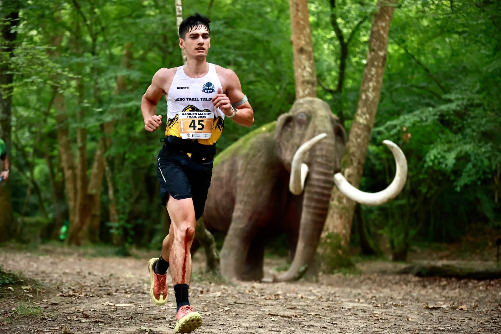

Club Deportivo Rasines Trail staged the Rasines Mamut Trail in Rasines, Cantabria, on Sunday 28 June 2026, with event coverage by the Image Media team. The event offered three distances on the day: the 26-kilometre Original, the 15-kilometre Speed Mamut Trail, and a 7.6-kilometre Mamut Infantil y Cadete race for younger athletes.

In the Original, Borja Fernández Fernández took the men's win in 2:33:11, ahead of Iván Martínez Gómez (Rasines Trail) in 2:34:45 and Oier Ocerinjauregui in 2:37:03. Laura Aparicio Galve (Epilacorre) led the women's field home in 3:21:50, with Irene Olagüe Méndez de Vigo second in 3:36:09 and Susana Martínez Agudo (Somos Ecoparque) third in 4:10:14. In the Speed Mamut Trail, Josu Araiztegi Aranburu (Goizian Goiz) won the men's race in 1:09:44 from Pablo Martínez Serna (1:10:50) and Alberto Crespo Gutiérrez (Zorros Team, 1:11:28), while Lucía Martínez Martínez (Brave Bulls) topped the women's podium in 1:32:07, ahead of Cristina Sañudo Sedano (CDE Corzos Trail Team, 1:34:50) and Lydia Navarro Pérez (1:37:00).

The course wound through dense, fern-lined trails in the Cantabrian hills, with an arch banner marking the mass start and a mammoth statue positioned along the route in a nod to the event's "Mamut" branding. Between the three distances, 353 runners crossed the finish line: 59 in the Original, 272 in the Speed Mamut Trail and 22 in the Mamut Infantil y Cadete, where Sergio Abascal Bedia (CDB Riotuerto Sport Team) set the fastest time of the day.
Event coverage at Rasines Mamut Trail was provided by the Image Media team, comprised of Diego, Sergio Mendes and Matheus.